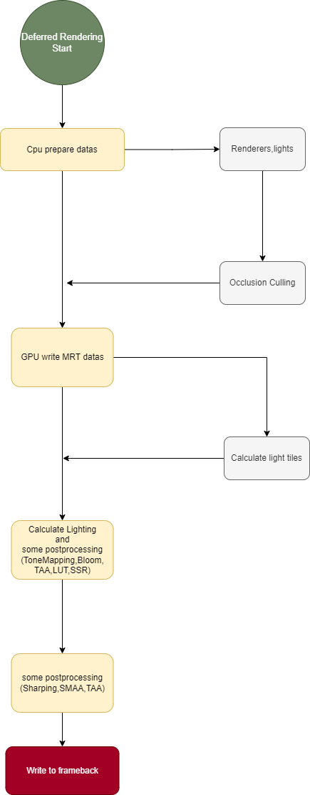

延迟渲染
1.前言
延迟渲染本质是解决前向渲染多光源Overdraw问题，先绘制一边光照所需要数据到G-Buffer里，
延迟渲染本质上就是把运算量最大的光照方面的计算置于后处理，因此带来两个问题：
需要先绘制一遍提交光照所需要的数据，再用一个pass计算光照效果，一共需要两个pass，某些后处理需要卷积计算还需要多一个pass做后处理
光照需要的数据32bit位数据难以存储完整，需要MRT技术支持才能复数输出光照多个目标数据，也就是说TBR/TBDR架构的Gpu单次处理的数据量大大减少
2.延迟渲染架构
